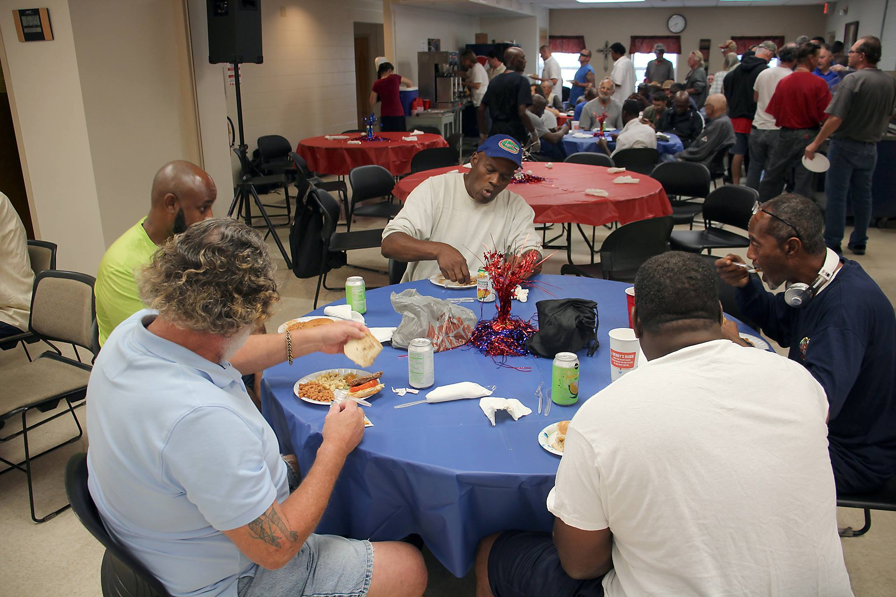

The Client
Who is Lighthouse Ministries? What do they do?
Lighthouse Ministries is a nonprofit located in Lakeland, Florida. Their aim is to serve the homeless and less fortunate community. The organization has been serving for over 40 years, and the current website shows the age of the company.